Этап 1: Ходьба на месте
1. Ходьба с подъемом колен
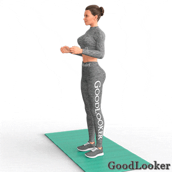По 10 подъемов колен на каждую ногу.
2. Подъем рук и колен
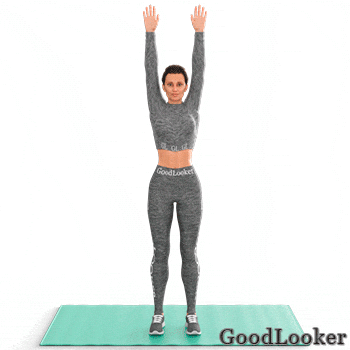По 10 подъемов колен на каждую ногу.
Этап 2: Суставная гимнастика
1. Наклоны головы
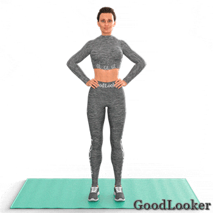По 5 наклонов в каждую сторону.
2. Вращение плечами
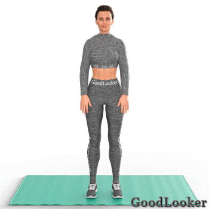По 5 повторений в каждую сторону (по и против часовой стрелки).
3. Вращение локтями
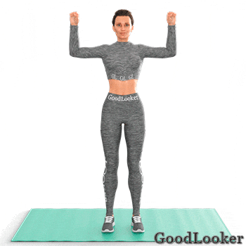По 5 повторений в каждую сторону (по и против часовой стрелки).
4. Вращение руками
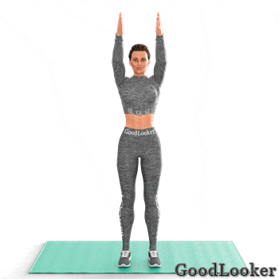По 5 повторений в каждую сторону (по и против часовой стрелки).
5. Вращение запястьями
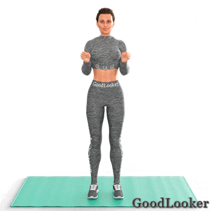По 5 повторений в каждую сторону (по и против часовой стрелки).
6. Вращение тазом
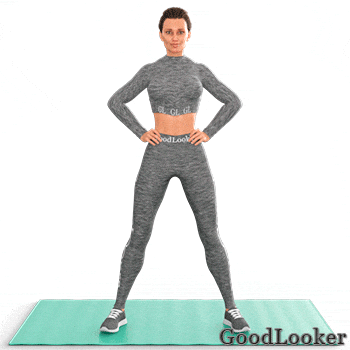По 5 повторений в каждую сторону (по и против часовой стрелки).
7. Вращение ногами
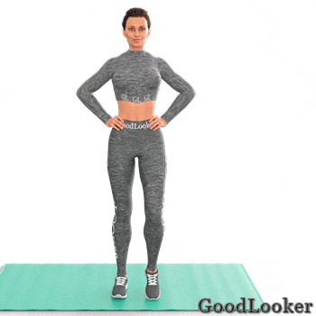По 5 повторений в каждую сторону (по и против часовой стрелки) на правую и левую ногу.
8. Вращение коленями
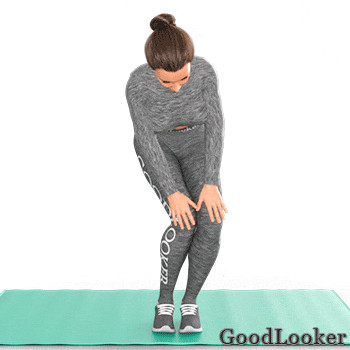По 5 повторений в каждую сторону (по и против часовой стрелки).
9. Вращения стопой
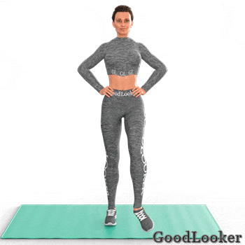По 5 повторений в каждую сторону (по и против часовой стрелки) на правую и левую ногу.
Этап 3: Динамическая растяжка мышц
1. Разведение рук для плеч, спины и груди
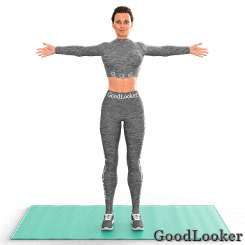10 повторений.
2. Разведение локтей для дельт и плечевых суставов
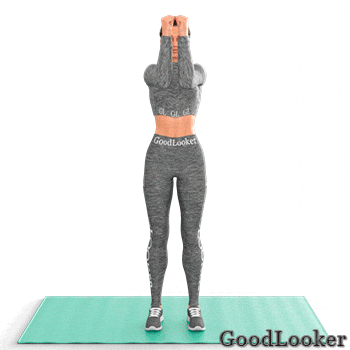10 повторений.
3. Сгибание рук для бицепсов и трицепса

10 повторений.
4. Повороты для пресса и косых мышц
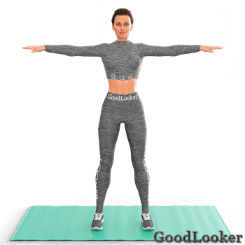По 5 повторений в каждую сторону.
5. Наклоны в сторону для пресса и косых мышц
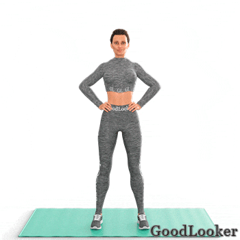По 5 повторений в каждую сторону.
6. Выгибания для спины и позвоночника
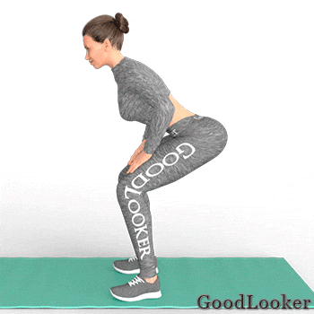7 повторений.
7. Наклон в приседе для спины и плеч
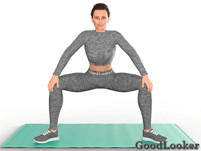По 5 повторений в каждую сторону.
8. Наклоны к полу с разворотом
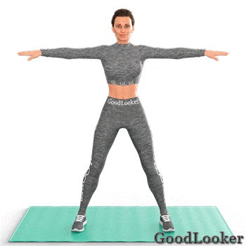По 5 повторений в каждую сторону.
9. Приседания с подъемом рук

10 приседаний.
10. Боковые выпады для разминки ног
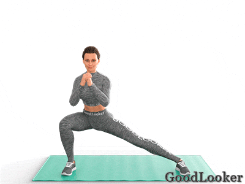По 5 повторений в каждую сторону.
11. Выпады для разминки ног
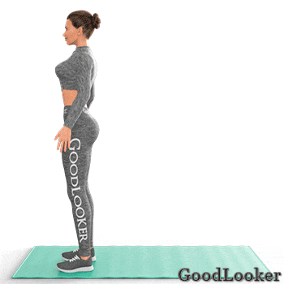По 5 повторений в каждую сторону.
12. Наклоны для задней поверхности бедра
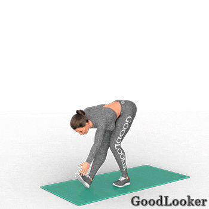По 5 повторений в каждую сторону.
13. Подъемы ног вперед для растяжки ягодиц
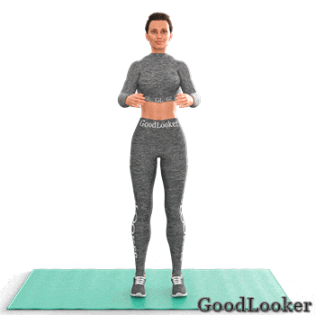По 5 повторений в каждую сторону.
14. Подъемы ног для растяжки квадрицепса
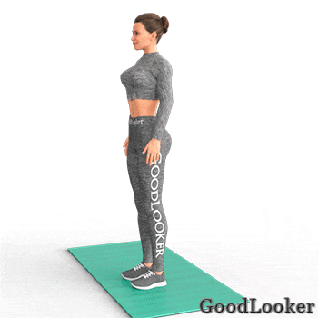По 5 повторений в каждую сторону.
Этап 4: Кардио-разогрев
1. Бег на месте с захлестом голени
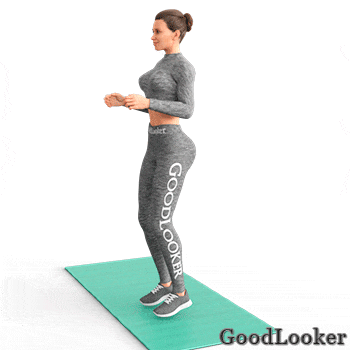По 15 подъемом ног в каждую сторону.
2. Прыжки через скакалку
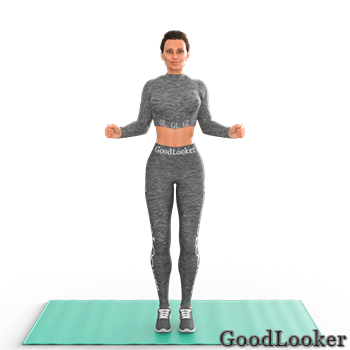30 прыжков.
3. Прыжки с разведением рук и ног
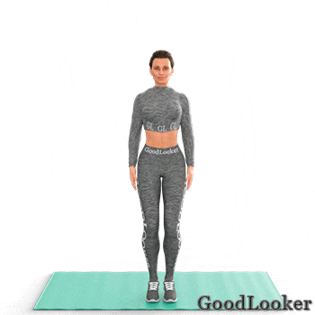30 прыжков.
Этап 1: Суставная гимнастика
1. Наклоны головы
По 5 повторений в каждую сторону
2. Вращение плечами
По 10 повторений в каждую сторону (по и против часовой стрелки).
3. Вращение руками
По 10 повторений в каждую сторону (по и против часовой стрелки).
4. Вращение тазом
По 10 повторений в каждую сторону (по и против часовой стрелки).
5. Вращение ногами
По 5 повторений в каждую сторону (по и против часовой стрелки) на правую и левую ногу.
6. Вращение коленями
По 5 повторений в каждую сторону (по и против часовой стрелки).
7. Вращения стопой
По 5 повторений в каждую сторону (по и против часовой стрелки) на правую и левую ногу.
Этап 2: Динамическая растяжка мышц
1. Наклоны в сторону для пресса и косых мышц
По 10 повторений в каждую сторону.
2. Наклоны к полу с разворотом
По 10 повторений в каждую сторону.
3. Выгибания для спины и позвоночника
10 повторений.
4. Наклон в приседе для спины и плеч
По 10 повторений в каждую сторону.
5. Приседания с подъемом рук
10 приседаний.
6. Боковые выпады для разминки ног
По 5 повторений в каждую сторону.
7. Выпады для разминки ног
По 5 повторений в каждую сторону.
8. Махи ногами вперед-назад
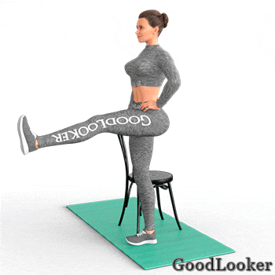По 10 махов на каждую ногу.
9. Махи ногами вправо-влево
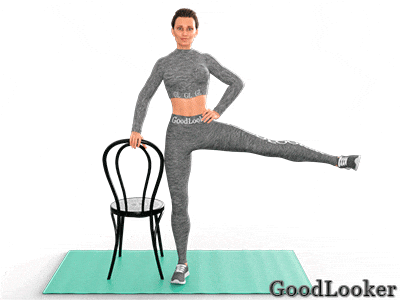По 10 махов на каждую ногу.
10. Пульсация с наклоном
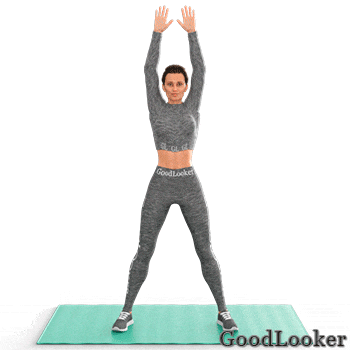7 наклонов.
11. Подъемы ног вперед для растяжки ягодиц
По 5 повторений в каждую сторону.
12. Разведение рук с приведением ноги
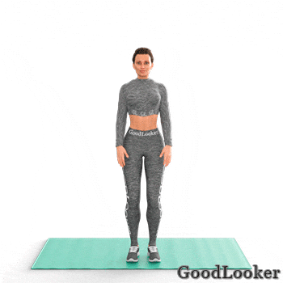20 разведений рук.
13. Прыжки с разведением рук и ног
25 прыжков.